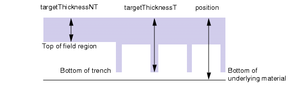
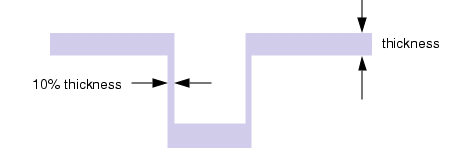
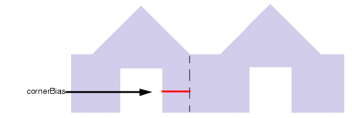
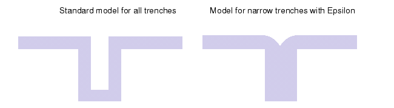
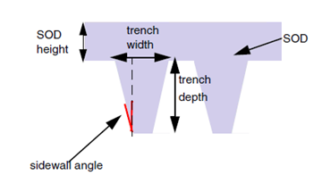
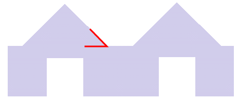

deposit
Usage
deposit type={isotropic | anisotropic | ecd | HDP_CVD | fill | SOD} \
[anisotropyFactor=value] [cornerBias=dist] [cornerBiasN=dist]\
[criticalSpace=width] [criticalSpaceN=width] \
[current=amperes] [currentDensity=amperes_per_cm2] [diameter=value] \
[dt=time_step] [Epsilon=fitting_factor] [fluxBalance] [HeightFactor=value]\
[mask_selective=layer_number] [maskFile_selective=filename] \
[material=material_name] [maxDishing=depth] [minW=min_width] \
[model=model_name] [nsteps=number_steps] \
[negativeSelective] \
[position=surface_position] [rate=rate] \
[saveDishing] [saveErosion] [saveThickness] [saveZ1] [saveZ2] [save2D] \
[sidewallAngle=degrees] \
[sidewallsOnly=thickness] \
[slopeAngle=degrees] [slopeAngleN=degrees] [Smax=s] [SmaxN=s] \
[snapshot=snap_ID] [spaceThreshold=distance] \
[targetThicknessNT=height [targetWeight=grid |targetX=coordinate targetY=coordinate]] \
[targetThicknessT=height [targetWeight=grid | targetX=coordinate targetY=coordinate]] \
[thickness=thickness] [time=time] \
[WidthBias=bias] [WidthFactor=value]
Typical syntax for each type:
deposit type={isotropic | anisotropic} [material=material_name] [thickness=thickness]
deposit type= ecd [model=model_name] [thickness=thickness] [time=time] [dt=time_step] [nsteps=number_steps]
deposit type=HDP_CVD [material=material_name] [cornerBias=distance] [slopeAngle=degrees] [targetThicknessT=height]
deposit type=fill [material=material_name] [position=surface_position]
deposit type=SOD [material=material_name] [thickness=thickness] [HeightFactor=value] [WidthFactor=value]
Each type has additional parameters, which may be useful for some situations but typically are not required for good results.
Parameters
- type={isotropic | anisotropic | ecd | HDP_CVD | fill | SOD}
A required parameter defining how deposition is applied. Allowed values are:
isotropic — When specified, you must also specify the thickness and the material. Thickness can be supplied as a single value or by specifying the rate and time.
Figure 1. Isotropic Depositionanisotropic — When specified, you must also specify the thickness and the material. Thickness can be supplied as a single value or by specifying the rate and time.
Figure 2. Anisotropic Deposition
ecd — When specified, you must also specify the following:
The name of an electroplating model that must be specified elsewhere in the Process Recipe File using a define_model command.
Thickness information in the form of thickness and/or time and rate (dt and nsteps).
HDP_CVD (High Density Plasma Chemical Vapor Deposition) — When specified, you must also specify either targetThicknessT or targetThicknessNT and three of the following:
The cornerBias that defines how far from the edge of the sidewall the oxide overburden extends.
The criticalSpace at which triangular pyramids start to become trapezoidal.
Either dishing measurements in the MD file or maxDishing, which sets the depth of the difference between the highest and lowest point of the oxide surface over the trenched region.
The slopeAngle of the pyramidal shape formed by the oxide overburden.
fill — When specified, you must also specify the height. For single layers, use position, which defines the surface position after fill. For multilayer simulations, use either targetThicknessT or targetThicknessNT.
Figure 3. Position Choices for Fill DepositionSOD (Spin-On Dielectric) — When specified, you must also specify the following:
Thickness. Unlike the other types, you cannot use rate and time for thickness information. The thickness must be greater than the trench depth.
The WidthFactor and HeightFactor that calculate the dishing in the dielectric as the material settles into the trenches.
- anisotropyFactor=value
A floating point value that represents the ratio of sidewall accumulation versus field thickness of the deposited material. For example, specifying 0.1 for this argument means that ten percent of the final thickness in the field regions are deposited on the sidewalls. Specifying 10% or 0.1 for the anisotropyFactor carries out the same action. See Figure 4.
Figure 4. Anisotropy Factor- cornerBias=dist
An optional argument used with HDP_CVD deposition only. The value of dist indicates the distance between the edge of the trench and the start of the pyramidal build-up, and can be positive or negative. If dist is negative, its absolute value must be less than criticalSpace/2. It is measured in microns.
Figure 5. Corner Bias- cornerBiasN=dist
An optional argument used with enhanced HDP_CVD deposition only. When specified with cornerBias and spaceThreshold, cornerBiasN refers to narrow trench values and cornerBias to wide trench values.
- criticalSpace=width
An optional argument used with the HDP_CVD deposition only. The critical space is the threshold width of active area at which the mound of deposited material starts to flatten at the top, changing shape from a triangle or pyramid to a trapezoid. The width value must be greater than 0.
- criticalSpaceN=dist
An optional argument used with enhanced HDP_CVD deposition only. When specified with criticalSpace and spaceThreshold, criticalSpaceN refers to the critical space for narrow trenches and criticalSpace is restricted to wide trenches.
- current=amperes
An optional argument used with ecd deposition only. The current is the total current over the wafer. It is used to determine the nominal plating rate.
- currentDensity=amperes_per_cm2
An optional argument used with ecd deposition only. It is used to determine the nominal copper deposition rate.
- diameter=value
An optional argument used with ecd deposition only. The diameter refers to the diameter of the wafer.
- dt=time_step
An optional argument used to specify the time interval of the deposited material, expressed in seconds. This argument is only used for electroplating. If dt is not specified, this value is derived from time and nsteps.
- Epsilon=fitting_factor
An optional parameter used to round the deposition of material into a trench. It may only be specified with isotropic depositions. It has no affect on wide trenches, but on narrow trenches it allows the trench bottom to be at a greater height. See Figure 6.
Figure 6. Deposition Rounding in Narrow TrenchesWhen Epsilon is used, the thickness parameter can be specified as an expression.
- fluxBalance
An optional parameter that takes no value. When specified, includes dynamic modeling of flux when calculating isotropic deposition.
- HeightFactor=value
An optional argument used with SOD models primarily, where it is required. The value, which should be between 0 and 1, is used in conjunction with WidthFactor to model the overall depth of dishing. A value near 0 indicates very shallow dishing and near 1 very deep, nearly to the trench bottom on very wide trenches. In version 2010.1, this parameter was anisotropyFactorZ.
- mask_selective=layer_number
An optional argument that is only valid when type=isotropic or type=fill. It restricts the deposit to the areas indicated by the shapes on layer_number. If negativeSelective is specified, the areas outside the polygons are deposited rather than the areas inside the polygons.
- maskFile_selective=filename
An optional argument that is only valid when type=isotropic or type=fill. This argument contains the file name of the selective mask to read. When specified with mask_selective, the deposit is restricted to only pixels covered by the selective mask.
- material=material_name
An optional argument used to specify the name of the deposition material.
Material names allow you to define CMP models that behave differently depending on the type of material being polished. Refer to the define_model command for more information.
- maxDishing=depth
An optional argument used with HDP_CVD deposition only. It specifies how far between targetThicknessT and the top of the deposition mound.
- minW=min_width
An optional parameter used to specify the minimum remaining width of a trench after isotropic deposition of a material into it. If the remaining width is smaller, the trench is considered filled and no electroplating is done for this trench.
- model=model_name
An optional parameter used to specify the electroplating model which must be specified elsewhere in the Process Recipe File using a define_model command. This parameter is required when type=ecd.
- negativeSelective
An optional keyword that is only used when type=isotropic or type=fill. It does not take a value.
The negativeSelective option indicates that the mask supplied by the mask_selective argument is a negative; that is, the shapes on the layer indicate the areas that are not deposited.
- nsteps=number_steps
An optional argument used to specify the number of steps of deposited material. This must be an integer value. This argument is only used for electroplating. The default value is 200. If dt and nsteps are not specified, nsteps is set to 200.
- position=surface_position
An optional parameter used to specify the position of the surface in vertical space, expressed in angstroms. When type=fill, the command must include one of position, targetThicknessT, or targetThicknessNT.
When anisotropyFactor is set to 0, the model behaves like anisotropic deposition is applied and it deposits only horizontal surfaces. Material is not deposited on side walls in this case.
- rate=rate
An optional argument used to specify the deposition rate of the deposited material, expressed in angstroms per second. The HDP_CVD model does not support this parameter.
- sidewallAngle=degrees
An optional argument used only with SOD deposition. It considers the effect of the angle of the trench sidewalls on the erosion of the deposited layer. The trench sidewalls are assumed to be symmetrical; degrees should be between 0 and 90. The default value is 0.
Figure 7. Sidewall Angle- sidewallsOnly=thickness
An optional argument used only with type=anisotropic to support material deposition only on the trench sidewalls. If enabled, the thickness value of the deposition in angstroms is used to update the geometry data. Thickness expressions are supported.
- slopeAngle=degrees
An optional argument used only with HDP_CVD deposition. It specifies the angle of the oxide sidewalls as shown in Figure 8. The oxide overburden is assumed to be symmetrical; degrees should be between 0 and 90.
Figure 8. Slope Angle- slopeAngleN=degrees
An optional argument used with enhanced HDP_CVD deposition only. When specified with slopeAngle and spaceThreshold, slopeAngleN specifies the angle for oxide associated with narrow trenches and slopeAngle is restricted to wide trenches.
- Smax=s
An optional argument that activates enhanced HDP_CVD deposition. It is equal to cornerBias + (criticalSpace/2). For non-linear models, you only need either Smax or cornerBias.
- SmaxN=s
An optional argument used only with enhanced HDP_CVD deposition. When specified with Smax and spaceThreshold, SmaxN specifies the Smax value for narrow trenches and Smax itself is restricted to wide trenches.
- Snapshot=snap_ID
An optional keyword and positive integer used to assign a unique identifier to a state after this deposition step is complete. This identifier is used in the Snapshot column in the measured data file to associate measured or simulated data with this state.
- spaceThreshold=distance
An optional argument used only with enhanced HDP_CVD that indicates the threshold between wide and narrow trenches.
- targetThicknessNT=height
An optional parameter that specifies the non-trench (field) thickness at which to stop the deposition. This argument can only be used when type is ecd, fill, or HDP_CVD. When this is set, then the time setting is ignored.
The way the simulated thickness is calculated depends on the settings of targetX/targetY or targetWeight.
If neither targetX/targetY nor targetWeight is set, the targetThicknessNT value is compared to the average of all NT grids. This is the default.
If targetX and targetY are set, then the average thickness at the grid that includes that coordinate is used. If the coordinates are not in a field region an error is generated.
If targetWeight is set, then targetThicknessNT is compared to the weighted average of the thickness of all grids.
When type=fill and targetThicknessNT=0, the deposit command keeps the current pattern density for all pixels.
- targetThicknessT=height
An optional parameter that specifies the thickness at which to stop deposition. The thickness is measured from the bottom of the trench to the top of the deposited material within the trench. When targetThicknessT is set, the time setting is ignored.
When type=fill, the deposit command must include one of position, targetThicknessT, or targetThicknessNT. If targetThicknessT is used and it is less than the trench depth, the deposited material only partially fills the trenches. If targetThicknessT is greater than the trench depth, the surface position on the non-trench areas is equal to the difference between targetThicknessT and the average trench depth.
- targetWeight=grid_file
An optional parameter naming a grid file with weights. The weights are applied to the simulated thickness for each pixel. The default weighting is 1 for all grids. Cannot be specified with targetX targetY.
- targetX=coordinate targetY=coordinate
An optional pair of parameter that can be used with targetThicknessT or targetThicknessNT. The pair specify the coordinates at which to measure the simulated thickness. Both targetX and targetY must be specified when used. They cannot be used with targetWeight.
- thickness=thickness
An optional argument used to specify the thickness of the deposited material, expressed in angstroms.
When used with “type=isotropic” or “type=anisotropic”, thickness can be expressed as an expression that includes measured values ($M_width, $M_space, $M_area, and $M_perimeter) and calibration parameters. Expression-based thickness requires the process recipe includes at least one etch step preceding the deposit step; if the recipe would not otherwise include this etch step, set the etch thickness to 0. Expression-based thickness may be useful when modeling High‑K Metal Gate (HKMG).
- time=time
An optional argument used to specify the length of time the material is being deposited, expressed in seconds. You must specify either the targetThickness or the rate and duration of the deposition (time with nsteps or dt alone) for all layers except those that are type=fill.
When the deposit command also includes targetThicknessT or targetThicknessNT, the time argument is ignored.
- WidthBias=bias
An optional parameter used primarily in SOD models for biasing geometry masks. The bias parameter represents an adjustment factor to help match the observed trench behavior. It can be negative (closes more trenches than otherwise predicted) or positive (reduces the number of trenches that otherwise close).
Use WidthBias when trenches are overetched, but you do not have an etch model in the recipe.
- WidthFactor=value
An optional parameter used only in SOD models. The value parameter is a number from 0 to 2000 that roughly correlates to the width of the dishing after the dielectric has been spun-on and settled into the trenches. The value is unitless. It is recommended to fit this to measured data.
This parameter is required when type=SOD. In the 2010.1 release, it was anisotropyFactor.
Description
All keywords except material and snapshot support Symbolic Names. Symbolic names can be used in the command to indicate that the parameter is to be fitted to empirical data. Any parameter assigned a numeric value is untouched during model calibration. That is, this parameter is not fitted or optimized.